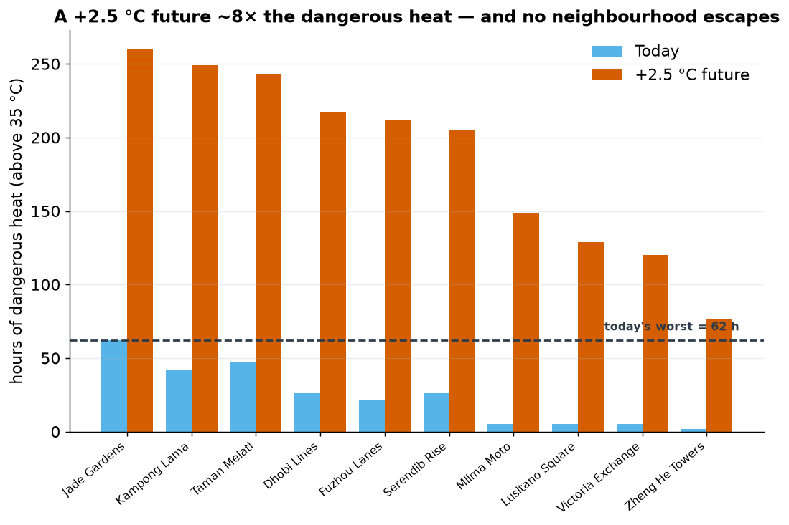
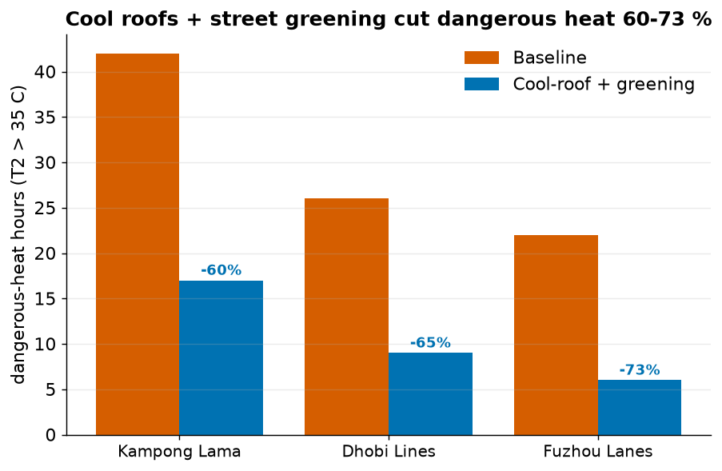
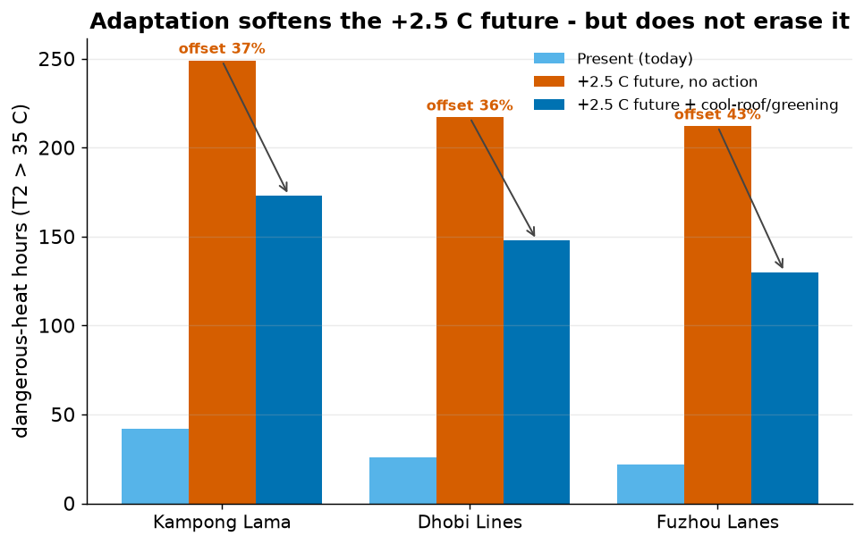

The city at a glance

1. Hottest ≠ highest-risk
Hazard and risk are different questions. One is about the air; the other is about the people in it.

Why the divergence? It comes down to urban form:
- Why Jade Gardens is hottest: it is smooth and low-rise. Aerodynamically smooth surfaces mix the air weakly, so daytime heat builds up near the ground — but almost nobody lives there (80 people per hectare, the lowest), with more air-conditioning and less deprivation. High hazard, near-zero exposure → low risk.
- Why Kampong Lama is highest-risk: a dense informal settlement — still genuinely hot, but packed with 300 people per hectare, only 8% air-conditioning access, 62% outdoor workers and high deprivation. High on all three pillars of risk at once.
2. The risk table
Risk = Hazard × Exposure × Vulnerability, each scored 0–1 across the ten neighbourhoods and combined as a (deliberately cautious) geometric mean — a near-zero in any one pillar pulls risk down.

| Rank | Neighbourhood | Type | Danger hrs (above 35°C) |
Hazard | Exposure | Vuln. | Risk index | What it means |
|---|---|---|---|---|---|---|---|---|
| 1 | Kampong Lama | hotspot | 42 | 0.67 | 1.00 | 0.95 | 1.00 | ● Act first — hot, crowded, few defences |
| 2 | Dhobi Lines | hotspot | 26 | 0.40 | 1.00 | 0.92 | 0.83 | ● High priority |
| 3 | Fuzhou Lanes | hotspot | 22 | 0.33 | 1.00 | 0.97 | 0.80 | ● High priority |
| 4 | Mlima Moto | hotspot | 5 | 0.05 | 1.00 | 1.00 | 0.43 | ● Watch — crowded & vulnerable |
| 5 | Lusitano Square | core | 5 | 0.05 | 0.77 | 0.09 | 0.18 | ● Lower risk |
| 6 | Victoria Exchange | core | 5 | 0.05 | 0.77 | 0.06 | 0.15 | ● Lower risk |
| 7= | Jade Gardens | refuge | 62 | 1.00 | 0.00 | 0.32 | 0.00 | ● Hottest, but almost no one lives here |
| 7= | Taman Melati | refuge | 47 | 0.75 | 0.00 | 0.36 | 0.00 | ● Hot, but few people exposed |
| 7= | Serendib Rise | refuge | 26 | 0.40 | 0.00 | 0.27 | 0.00 | ● Few people exposed |
| 7= | Zheng He Towers | core | 2 | 0.00 | 0.77 | 0.00 | 0.00 | ● Low risk |
How to read: the Risk index (right of the numbers) is the bottom line — darker red = higher risk; the last column says what it means in plain terms. The two outlined cells on Jade Gardens show why it's only a "heat-management" case: the hottest Hazard (1.00) × zero Exposure (0.00) = zero Risk — because the three pillars are multiplied, an empty place can't be high-risk however hot it gets.
Take-away for action: the four hotspot settlements carry essentially all of the people-risk. The hottest refuge areas are a heat-management issue, not a life-safety priority — provided they stay sparsely populated.
3. What humidity and a +2.5 °C future change
Humidity makes everywhere more dangerous — but doesn't change who's worst
Why this matters: an ordinary thermometer (what scientists call a "dry-bulb" reading) ignores humidity — but the human body cools by sweating, and sweat only works if it can evaporate. In humid air it can't, so the body overheats at temperatures a plain thermometer calls "safe." The honest measure is the wet-bulb temperature (a thermometer with a wet cloth over it — it shows how well sweat can actually cool you). For scale: a wet-bulb of 28 °C is already dangerous for vulnerable people, 31 °C is severe, and 35 °C is the theoretical limit of human survivability. This city spends 90–265 hours every season above the 28 °C danger line.

One lesson we learned the hard way: switching to a humid-heat metric without also raising the threshold makes it "dangerous almost always" and destroys the signal — the metric and its threshold must move together.
+2.5 °C warming multiplies the hazard ~8-fold

Under the warmer future the people-risk ranking is stable (only a minor 2↔3 swap), because uniform warming raises hazard everywhere while exposure and vulnerability are unchanged. The message is not "the map reshuffles" — it's "the same places get far more dangerous, and the highest-risk settlements stay highest-risk."
4. A targeted intervention: cool roofs + street greening
We tested one concrete action on the three highest-risk settlements: brighten the roofs and pavements (reflect more sun) and convert some paved/bare ground to grass and trees (add evaporative cooling).

It works on the physics. Reflective surfaces cut absorbed sunlight, greening adds evaporative cooling, and together the sensible heating of the air falls by about a quarter — which is what cools the street. Dangerous-heat hours drop 42→17 (Kampong Lama, −60%), 26→9 (Dhobi Lines, −65%) and 22→6 (Fuzhou Lanes, −73%).
Does adaptation offset the +2.5 °C future? Partly — not nearly enough.
The decisive question for planning: if we deploy cool roofs + greening and the climate warms +2.5 °C, where do the three hotspots land?

Cool roofs + greening are powerful, but they are not a substitute for limiting warming. On the worst settlement, Kampong Lama, dangerous-heat hours go 42 (today) → 249 (+2.5 °C, no action) → 173 (+2.5 °C with adaptation): the measures claw back ~37% of the increase, yet the adapted-future level is still four times today's. The honest planning message: adapt and mitigate — local cooling buys real relief but cannot cancel the heat a hotter climate delivers.
5. Where this bridge holds — and where it breaks
The honest part. This pipeline is a decision aid, not an oracle.
✓ Where it holds
- The headline is robust. Hottest ≠ highest-risk survives every humid-heat metric and the +2.5 °C future — a structural feature of the city, not an artefact of one threshold.
- Relative ranking of the hotspots is stable and physically explainable (form → mixing → heat; density + low coping → risk).
- The physics of the intervention is sound and traceable to the surface energy balance (less absorbed sun, more evaporation, less sensible heat).
- Direction of travel — who to prioritise, and that warming worsens the same places — is trustworthy.
✗ Where it breaks
- It is an environmental hazard, not a health outcome. Hours above a temperature are a proxy for danger, not a prediction of illness or death.
- The socio-economic layer is synthetic. Read ranks, never absolute numbers; these are plausible magnitudes, not survey data for a real place.
- Relative (min–max) scaling doesn't transfer and hides progress — it inflates the apparent risk of untouched areas when the worst case improves, and pins sparsely-populated places at zero risk no matter how hot they get.
- District averages hide individuals — the most exposed people inside a "low-risk" area are invisible here.
- The future is a pseudo-warming stress test, not a downscaled projection; and the greening benefit assumes the vegetation is kept watered.
6. So what should a city do?
- Target the three informal settlements first. Kampong Lama, Dhobi Lines and Fuzhou Lanes are where dangerous heat meets dense, vulnerable, under-protected populations — they hold essentially all of the people-risk.
- Deploy cool roofs + street greening there. A low-cost, proven lever: 60–73% fewer dangerous-heat hours in our runs, working through reflected sunlight and evaporative cooling.
- Plan for the future now. +2.5 °C multiplies dangerous heat ~8-fold in the same places — adaptation is not optional.
- Measure success in heat avoided, not in a relative score, and never read a "0" risk for a sparsely-populated area as "safe."
7. Methods & reproducibility
- Model: SUEWS via
supy 2026.6.5— NARP net radiation + classic OHM storage heat (single-layer, laptop-runnable); 10 grids, present hot-humid forcing. - Readiness & provenance: the SUEWS
assess_readinesscheck reports zero assumed sample defaults — location, land cover and forcing are all site-specific (not the bundled London sample). Deeper material/vegetation parameters inherit the SUEWS-database values, expected for a synthetic city. - Hazard: dangerous-heat hours = hours with hourly-mean 2 m air temperature
(
T2) above35 °C, after a14-dayspin-up. Humid variant: wet-bulb (Stull 2011) above 28 °C from the model's ownT2+RH2. - Risk: UNDRR-style
hazard × exposure × vulnerability, each min–max scaled to 0–1 and combined as a geometric mean (perrisk_bridge.py). - Intervention: roof albedo 0.20→0.60, pavement 0.20→0.40; grass +0.10 and trees +0.07 of land cover (from paved/bare), on gridiv 4/5/9 only. Config validated before running. The same intervention is also run under the +2.5 °C future (four scenarios in total).
- Anthropogenic heat (QF): held off in the baseline (dataset
default,
emissions = 0) — population feeds exposure/vulnerability, not model heat. We did not vary it; enabling it would raise the dense settlements' hazard further (they would emit most), so our hotspot risk is, if anything, conservative. - Deeper analysis:
scripts/extensions.pyadds the day/night split, person-hours, intervention decomposition, greening-dose and robustness sweep (see the Deeper analysis page). - Source & data: config
uda-city.yml, bridgerisk_bridge.py/ caveatsrisk_bridge.md, scenariouda-city-intervention.yml— all in this repository. UDA-city is synthetic (realistic structure, not a real place); the socio-economic layer is synthetic — read ranks, not absolute values.
Reproduce every number and figure on this page with one command:
uv venv --python 3.12 .venv
uv pip install --python .venv "supy>=2026.6.5" pyyaml matplotlib pandas
.venv/bin/python scripts/reproduce.pyDeterministic — present / future dangerous-heat-hour totals 242 / 1861; intervention reductions −60 / −65 / −73%.
8. How AI built this — and where it cross-checked itself
A SUEWS run is only as good as the scrutiny around it. The AI agent (driving
supy + the SUEWS validation tools) was used not to autocomplete answers but to
catch its own mistakes. Full write-up — prompts, cross-checks and the SUEWS-community
contributions — on the AI workflow page →
Cross-checks that changed the answer
- Caught a saturating metric: apparent temperature at a 35 °C threshold flagged "danger" ~800 h everywhere — useless. Fix: threshold each humid metric at its own danger level (wet-bulb > 28 °C).
- Exposed a scoring artefact: the relative risk index hid a 60% real improvement — surfaced as a headline caveat, not buried.
- Verified the mechanism: the intervention's cooling was confirmed against the surface energy balance (QN↓, QE↑, QH↓), not just asserted.
Guardrails in the workflow
- Read the dataset's own
agent_manifest.yml+risk_bridge.mdbefore running anything — no guessed parameters. - Ran
suews validate(zero errors) before every long simulation. - Used the model's self-consistent 2 m
T2+RH2for humidity, not a physically inconsistent splice of forcing RH. - Verified the live site end-to-end (every asset served) rather than assuming deployment.
Read the full AI-workflow page → View repository & reproducible code →